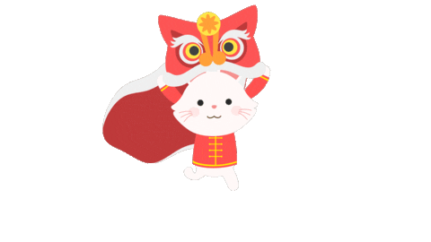

Tradiție, culoare și energie – toate într-un singur loc.
Dansul Dragonului este una dintre cele mai spectaculoase tradiții chinezești, simbolizând norocul, puterea și prosperitatea. Dragonul este considerat protectorul comunității, iar dansatorii îi dau viață prin mișcări sincronizate, acompaniate de tobe și gonguri.
Festivalul Lanternei marchează finalul sărbătorilor de Anul Nou Chinezesc. Mii de lanterne colorate luminează cerul, fiecare purtând o dorință sau un mesaj de speranță. Este un moment de magie, lumină și comunitate.
Ceremonia ceaiului este un ritual al liniștii, respectului și armoniei. Fiecare gest are o semnificație, iar ceaiul devine o punte între gazdă și oaspete. Este una dintre cele mai vechi tradiții chinezești.
Caligrafia este considerată o artă sacră în cultura chineză. Fiecare trăsătură exprimă emoție, disciplină și personalitate. În timpul festivalurilor, maeștrii caligrafi demonstrează scrierea caracterelor tradiționale și îi învață pe vizitatori să scrie cu pensula.